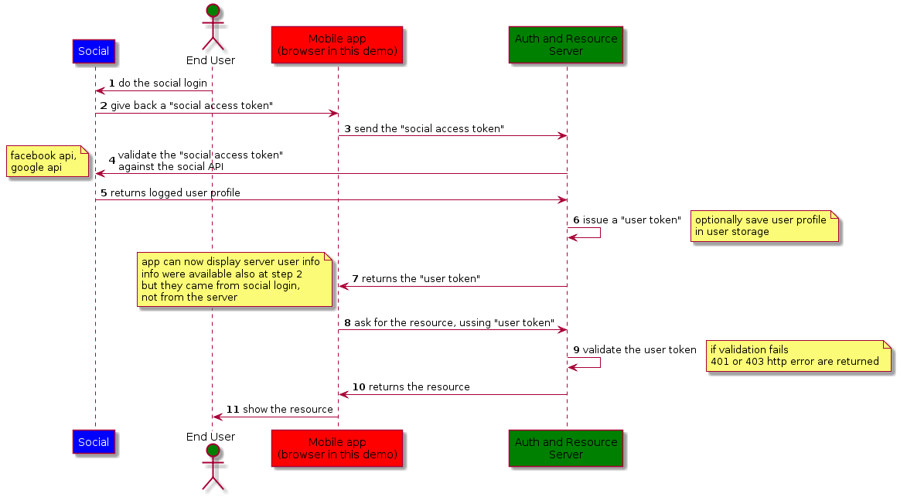

Protect REST API after social login with Node.js and Express.js demo
Please look the network and the console tab on dev tool.
working...Authentication flow
click anywhere to close
1 - Log yourself in using a social network
connecting to facebook... connecting to google...2 - Call the server with the social token.
this button is enabled after the social login3 - Call the server api
enabled after login on serverserver response:
Social Token